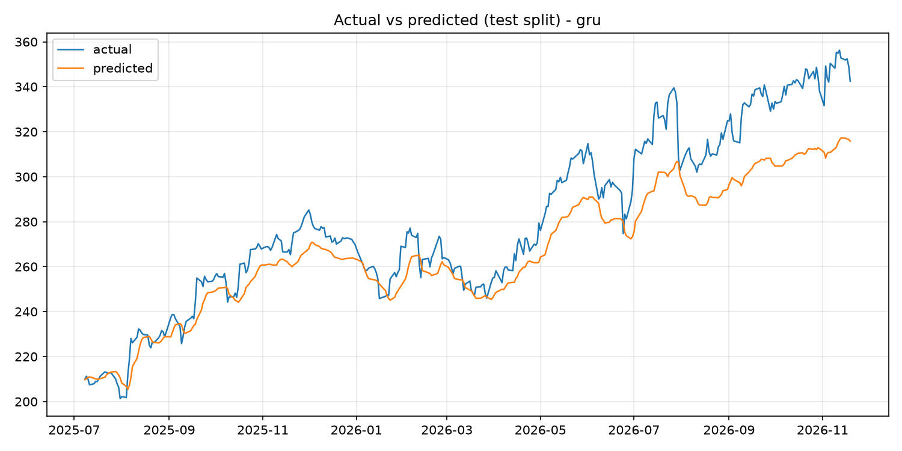
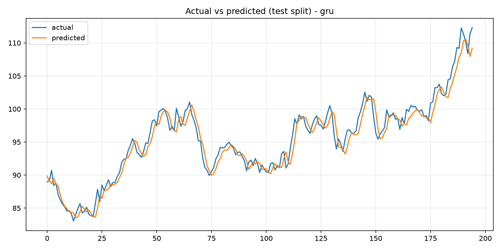
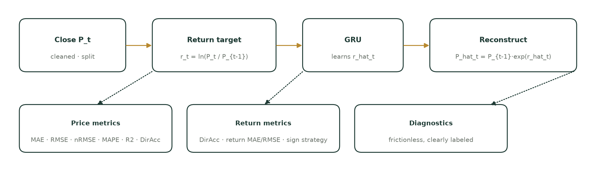
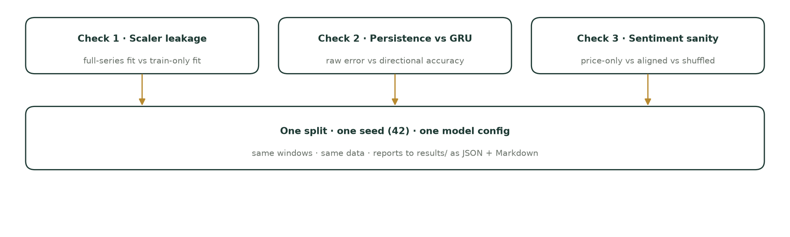
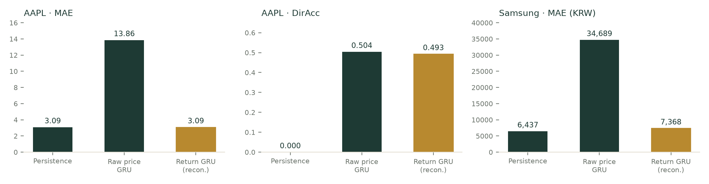

Research dashboard · verified results only
Improving GRU Sentiment
Stock Forecasting
Leakage-free PyTorch baseline and diagnostics, aligned to Padmakumari P. et al. (2026), Computational Economics.
Interactive charts
All verified graphs
1 · Horizon & overlap decomposition (h=1/3/5)
Grouped bars: Overlap vs Strict Non-Overlap vs Causal Momentum, error bars = ± std across seeds.
2 · Model family equivalence (h=1)
GRU (50/1), Ridge, GBR and Momentum converge at the daily noise floor.
3 · Loss / target / dead-zone diagnostics
mse, strict(0.005), hybrid, strict hybrid, logvol; plus MAE scaling across horizons.
4 · Sentiment & feature ablation (h=1, overlap)
Price-only vs +tech vs +lagged GDELT tone; standalone tone deltas; zero-feature dummy control.
Volume-based sentiment features (sent_vol_z, sent_x_vol) remain pending: the GDELT DOC API is currently returning HTTP 429 (rate-limited) for the article-count timeline, so no synthetic counts were substituted. Sentiment-shock features derived from tone (sent_shock) remain computed from real lagged tone.
5 · Leak-free split architecture
Verified figures
Rendered plots (from real runs)






Constructive upgrade suite
Paper upgrade — verified dual-benchmark (seeds 42 / 123 / 2026)
Non-overlapping windows, chronological 70/15/15, train-only scalers.
Mean ± std across seeds. Full tables in results/paper_upgrade/report.md.
Samsung 005930.KS — h=3: the one robust win
Standard concat lagged-sentiment GRU vs baseline GRU (price+tech).
| Metric | Baseline GRU | Concat sentiment GRU | Δ / note |
|---|---|---|---|
| MAE (price) | 30,963 ± 2,152 | 18,530 ± 1,438 | ≈ −40% |
| nRMSE | 0.2011 ± 0.0106 | 0.1249 ± 0.0096 | paper benchmark 0.048 (still above) |
| DirAcc | 0.5200 ± 0.0283 | 0.5667 ± 0.0189 | excess +0.067 · 0/3 seeds ≤ base |
| DM vs baseline — p | — | 0.0142 ± 0.0141 | significant at 5% |
| Net return (5bps/side) | 0.5046 ± 0.3391 | 0.7404 ± 0.3380 | higher |
AAPL — baseline remains best; VolGatedGRU + hysteresis: null/negative
No setup beats the baseline at AAPL. The negative-bias gated GRU and hysteresis deadband do not deliver on this data.
| Setting | DirAcc (h=3) | excess | MAE | verdict |
|---|---|---|---|---|
| Baseline GRU (AAPL) | 0.6405 ± 0.0092 | −0.0261 | 5.74 ± 0.05 | reference |
| Concat sentiment GRU (AAPL) | 0.6013 ± 0.1202 | −0.0654 | 7.51 ± 2.07 | noise / worse |
| VolGatedGRU + hysteresis (AAPL) | 0.6928 ± 0.0489 | +0.0261 (1/3) | 7.17 ± 1.65 | not significant |
| VolGatedGRU + hysteresis (Samsung h5) | 0.5444 ± 0.0416 | +0.0111 (2/3) | 53,935 ± 38,845 | worse MAE |
DM p-values are mostly non-significant; only Samsung h=3 concat is significant vs baseline. Small non-overlapping samples bound statistical power.
Data & integrity caveats
sent_vol_z/sent_x_voluse an activity proxy (rolling count of non-zero tone days); raw news article counts were unavailable — GDELT DOC Vol API is rate-limited (HTTP 429). No fabricated counts were substituted.- Sentiment remains the real cached GDELT tone, lagged 1 trading day.
- Non-overlapping test windows are small (~tens of points); multi-day results reflect trend persistence unless a significant DM statistic says otherwise.
Paper vs. leak-free audit
Comparison matrix
| Metric | Paper (2026) setup / benchmark | Verified leak-free audit | Notes |
|---|
No rows match the current filters / search —
575-paper literature corpus · anchored to Padmakumari et al. (2026)
Literature corpus synthesis
Every paper is real and lives in literature_corpus/ (gitignored bulk; manifest with paths, titles, years, venues, citations). Corpus = the faculty paper's 18 references + 9 OpenAlex related works + 404 papers citing those seeds + 144 tight title/abstract-search backfill; 208 records rejected by dedupe + finance-domain guards + post-audit cull. Full write-up: docs/literature_synthesis.md.
Corpus exemplars — verified metadata from the manifest
Engineering & audit timeline
Every real phase executed
-
01
Leakage & alignment audit
Chronological 70/15/15 splits, scaler fit on train rows only, boundary-safe lookback=30 windows, and explicit timestamp probe verification — with maxdiff = 0.0.
-
02
Bug fixes & baseline reproduction
Fixed build_feature_frame (Close feature inclusion) in src/horizon_experiment.py; clarified GRU disclosure (hidden_size=50, num_layers=1); reproduced Samsung nRMSE = 0.038 vs. paper 0.048.
-
03
Return, volatility & dead-zone diagnostics
Implemented log, logvol, hybrid loss, and strict(0.005) dead-zone filtering (0.352 deadzone share on AAPL) with Ridge baselines — 18/18 runs completed.
-
04
Real lagged GDELT sentiment ingestion
Built src/sentiment_gdelt.py with a strict 1-trading-day causal lag — 1222 AAPL rows, 1187 Samsung rows; real tone ablations kept separate from the zero-feature dummy control.
-
05
Multi-horizon & hypothesis battery (42/42 runs)
Tested h=1/3/5, causal technical features, and model families — GRU = Ridge = GBR at h=1; exposed MAE inflation at h=3/5.
-
06
Strict non-overlapping stride & momentum verification (48/48 runs)
Added --stride nonoverlap and causal momentum baselines; h=3/5 stays 12–23 points above momentum on disjoint windows, with small sample sizes (~tens of points) explicitly noted.
Full verified data
Data explorer
Reproducibility
Reproduce any run
Baseline
python -m src.baseline --ticker AAPL --seed 42
Return / directional diagnostics
python -m src.return_experiment --ticker AAPL --seed 42 \ --loss hybrid --return-type logvol --baseline ridge --epochs 100
Horizon / feature battery
python -m src.horizon_experiment --ticker AAPL --seed 42 \ --horizon 3 --features price+tech --loss mse --epochs 100
Sentiment ingestion
python -m src.sentiment_gdelt --ticker AAPL \ --query "AAPL" --out data/sentiment_AAPL.csv --days 1825